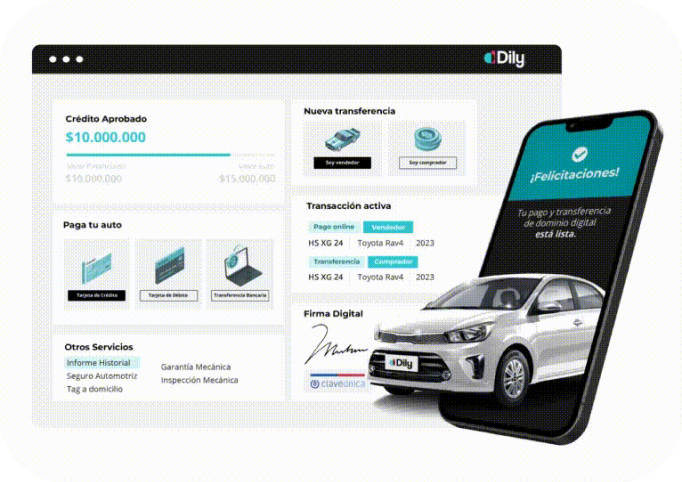
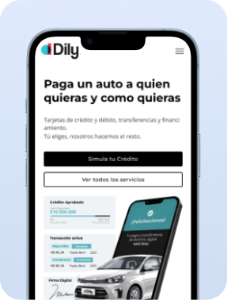
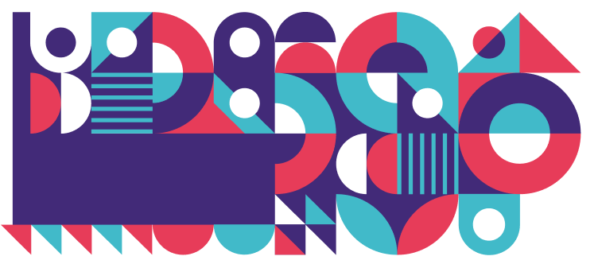

Diseñar menos para convertir más

En Dily detectamos que la página principal de nuestra plataforma no estaba cumpliendo su objetivo: convertir visitantes en leads calificados. A simple vista, la home entregaba mucha información simultáneamente —productos, beneficios, simuladores, y mensajes orientados tanto a automotoras como a usuarios particulares— lo que generaba ruido y poca claridad sobre el siguiente paso a seguir. A partir de esta observación, me propuse aumentar la generación de leads a través de un rediseño centrado en la simplicidad, el foco y la segmentación.

Problemas en el camino
Nuestra hipótesis inicial fue que la sobrecarga de información en la home estaba afectando directamente la tasa de conversión. El exceso de secciones competía visualmente, generando confusión en los distintos segmentos (automotoras y particulares), quienes no lograban identificar con rapidez la propuesta de valor ni el flujo de acción adecuado. En paralelo, los datos mostraban que el tiempo promedio en página era alto, pero las conversiones eran bajas, lo que evidenciaba un interés inicial sin una acción clara posterior.
El desafío
El desafío fue rediseñar la experiencia de la página principal, simplificando la estructura sin perder información relevante, y establecer flujos diferenciados para cada tipo de cliente. La meta: incrementar el ingreso de leads calificados y mejorar la tasa de conversión desde el primer contacto con el sitio.

Proceso de diseño y negociación
- A partir de este hallazgo:
- Separamos ambos flujos desde el inicio, creando dos experiencias claras y personalizadas.
- Redefinimos el menú principal con base en la jerarquía real de necesidades de los usuarios.
- Simplificamos el contenido visual priorizando mensajes breves, CTAs visibles y un diseño más limpio y respirable.
Solución final
El nuevo diseño de la Home Page de Dily logró establecer una experiencia mucho más enfocada y estratégica:
- En paralelo, negociamos con el equipo comercial y de marketing para mantener los mensajes clave pero reducir la cantidad de información por bloque, aplicando criterios de impacto y relevancia.
- La navegación es clara desde el primer clic, distinguiendo el flujo de automotoras y de particulares.
- La propuesta de valor se comunica en menos de 5 segundos gracias a jerarquías visuales y mensajes directos.
- Los CTAs principales fueron redefinidos con base en el comportamiento de scroll y las métricas de atención detectadas en sesiones previas.
Resultados (6 semanas post lanzamiento):
- +38% en generación de leads calificados.
- +22% en tasa de conversión desde la home.
- −35% en tasa de rebote.
- Tiempo promedio en página reducido en un 18%, reflejando una navegación más dirigida y efectiva.
La simplificación visual y estructural permitió que la home pasara de ser un espacio informativo a una verdadera herramienta de adquisición, demostrando que diseñar menos puede generar mucho más impacto.